Estimates of fracture density and uncertainties from well data
![]()
This paper aims at building a method to estimate the probability law governing the 3D fracture density of a fractured rock conditioned to the number of traces observed on a borehole image when the spatial distribution of fracture centers is assumed to follow a Poisson process. A closed-form expression of this law, allowing to calculate its mean value as well as a confidence interval, is derived in both cases of a lineic well (scanline) and a cylindrical well. The latter is better adapted to the situation of fracture size of the same order of magnitude as the well radius, which enables the presence of partial traces. In particular, the method takes into account the bias in the density estimate due to the fact that a fracture may cut the well along two distinct traces according to the considered fracture size. Monte Carlo simulations finally show a good agreement with the theoretical results of mean density and confidence interval.
fracture networks, density probability law, scanline, cylindrical well, partial intersection
Author-accepted manuscript (postprint). This is the accepted version of an article published by Elsevier in International Journal of Rock Mechanics and Mining Sciences. The version of record is available at doi:10.1016/j.ijrmms.2008.08.003. Please cite as: J.-F. Barthélémy, M. L. E. Guiton, J.-M. Daniel, “Estimates of fracture density and uncertainties from well data”, International Journal of Rock Mechanics and Mining Sciences 46(3) (2009) 590–603. © 2009 Elsevier Ltd.
This author-accepted manuscript is made available under the Creative Commons Attribution-NonCommercial-NoDerivatives 4.0 International (CC BY-NC-ND 4.0) license. 
Introduction
Naturally fracture networks in subsurface reservoirs have long been recognized to potentially influence the flow of hydrocarbon ([1], [2]), water or \(CO_2\) ([3], [4], [5]). At the scale of rock matrix heterogeneity, micro-fractures, which are the main ones fully or partially observed on core data, can provide a substantial contribution to the initial volume of fluid in place ([6], [7]). At a larger scale of a drainage area around a given well, natural fracture network may significantly enhance the permeability, as identified in pressure transient analysis with change of derivative in time, or production events like mud-loss or early water breakthrough. At the late stage of production, the presence of natural fractures often controls the efficiency of enhanced recovery processes ([8], [5]). At shallow depth, natural fractures are also known to control the mechanical behavior of rock masses involved in the stability of civil engineering structures such as tunnels ([9], [10]).
Considering fractures as micro-heterogeneities in a representative volume element (R.V.E.) of the reservoir,
their hydraulical or mechanical effects are involved in simulations often through homogenized properties.
For instance, the macroscopic permeability as well as the percolation threshold can be estimated by numerical ([11], [12], [13], [14], [15], [16]) or
theoretical methods ([17], [18], [19], [20], [21], [22]).
Whatever the method, the construction of homogeneized property should require the following
stages. First, it is necessary to collect information on parameters describing the fractures in the
R.V.E. from scarce available data, namely mainly from core data analysis or from image log
(e.g. FMS, FMI and UBI) interpretation ([23], [24], [25]).
Besides the qualitative description of a possible cementation or material infill which
should be considered for conductivity, a quantitative description is generally first elaborated from geometrical parameters : orientation, size,
spatial distribution, connectivity, opening and density. In the following, we will focus only
on the fracture density (see definition in 1) which is particularly important to appropriately
estimate homogenized hydraulical properties.
The usual procedure is then to extrapolate fracture density from well data to the full field
reservoir by means of a geostatistical approach, either with basic variogram analyses [23]
or with the construction of an explicative function relating fracture density to drivers available
at the full field scale. For instance, multilinear explicative functions are obtained with
discriminant analysis in [26], [27] and [16], while non-linear
explicative functions are provided by neural network techniques in [28] and [29]. The drivers used to explain fracture density may be interpreted according to the geological history during which natural fractures have formed. It is worth considering the influence of mechanical properties
coming from lithology (e.g. porosity, grain size, dolomitization in [1], [26]) or
from sedimentology like the small bed thickness positively correlated to the spacing between joints
([30], [31], [32]). Natural fractures distribution may also have been controlled
by tectonic deformation like the extension in fold outer-arc which correlates to strata curvature
([33], [34], [27]) and the large shear deformation at the
vicinity of faults ([35], [26]) which is often partly accommodated by pervasive fractures.
A crucial point of the workflow is the link between the estimate of fracture density from well observations and the \(3D\) density of a R.V.E.. Indeed, it is for instance well known that
the first one is strongly influenced by the relative orientation of the well with respect to fractures, while R.V.E. density should not. Since [36] and then in [37], [38], [39], [40] a correction factor is widely used to compensate the
poor chance to sample fractures sub-parallel to the well trajectory. More recently, this method has been extended to account for the intersection of fractures of finite size with a well cylinder ([41], [40]) or for the bed thickness ([31], [6]). Alternatively, in [24] fracture density is computed with data from different locations on the well but converging towards a same volume of density measurement. When a relationship has been derived between the mean density computed from the observations and that of a corresponding given \(3D\) fracture network, the uncertainty of the density estimate remains to be quantified, in order to allow for instance the comparison of density estimate from different wells. An empirical way to quantify this uncertainty would be to realize many \(3D\) discrete fracture networks (D.F.N.) in a Monte Carlo simulation with a priori postulate on the \(3D\) model properties (orientation, size and density of fractures) following for instance the idea presented in [42] in which the size distributions is constrained from length of observed fracture traces. Beside the obvious time consuming drawback of such a method, the quantification of a probability distribution for the \(3D\) fracture density would lack of precision. Also, like in [37], one could consider a distribution for the number of fractures in a given \(3D\) volume, e.g. the discrete Poisson distribution (see details in 1), but to the authors’ knowledge, the determination of the density parameter which characterizes such distribution given the well data remains to be done.
In this context, this paper aims at proposing closed-form solutions to this issue. The method presented in this paper therefore allows to quantify efficiently the uncertainty of the density estimate and to envision a quality control on the sample data. After recalling the different definitions of the density and the hypothesis of Poisson distribution, the paper falls into two parts. The first one considers the well as a scanline which can be crossed by plane fractures and the second one explicitely takes into account the cylindrical geometry of the well on which partial fracture traces can be observed. For both models, we derive the complete probability law of the fracture density conditioned to the number of observed traces along a well segment of given length. Eventually, this law allows to calculate the mean fracture density as well as quantiles, namely the confidence interval for any given tolerance. Whereas no assumption is made on the fracture shape in the lineic case, the procedure proposed for the cylindrical well requires the knowledge of the size distribution of fractures assumed to be elliptic. This distribution has therefore to be estimated beforehand, for example by assuming a correlation with another fracture property which can be observed on borehole images, e.g. spacing or aperture [25], or by means of an inversion procedure constrained by the observation of fracture traces on outcrop surfaces (e.g. see [43], [44], [45] and [46] for the intersection between circular fractures and a plane outcrop, and see [47] for the intersection between a \(3D\) fracture network and a well cylinder in partial or full traces). However, according to the considered size distribution, the density probability presented in this paper takes into account the bias induced by the fact that two distinct traces can possibly come from the same fracture, which implies a reduction of the apparent density.
1 Hypotheses and definitions
As often assumed, the fractures will be considered as planar (see [48] for a review about this hypothesis). The fractured medium that is studied here may contain several sets of fractures. A set gathers fractures according to the distribution of normal vectors around a mean pole and a rather small dispersion around the pole. For example, a method to create fracture sets statisfying bivariate normal distributions can be found in [49] (other distributions are presented in [50]). Each set is also characterized by a size distribution. The presence of several sets may imply a correlation between the orientation and size distributions. Nevertheless, it is reasonable to assume these properties are independent within each set.
In the following, a unique set is considered. It is then characterized by an orientation distribution, a size distribution as well as a density. The latter in a rock mass crossed by a well is quantified by means of the following definitions ([37], [38], [39]): \(P_{30}\) is the mean number of fracture centers per unit volume (in \(/m^3\)), \(P_{32}\) is the mean fractured surface per unit volume (in \(m^2/m^3\)), \(P_{21}\) is the mean curvilinear length of fracture traces per well unit surface (in \(m/m^2\)), recalling that a trace is defined as the intersection between the fracture and the well surface (seen as a cylinder) and \(P_{10}\) is the mean number of fracture traces per well unit length (in \(/m\)). To identify proper parameters of the size, orientation and spatial distributions, it is necessary to consider studied domains, namely intervals, within which those parameters are stationary. Therefore, the intervals must be small enough to ensure the homogeneity of the distributions. The hypothesis of the independence between the size distribution and the spatial location is also argued in [48]. The last hypothesis, which will play a major role in the sequel, is that the fracture centers follow a Poisson distribution. Although this is not the only spatial distribution which has been identified on field observations, numerous works ([51], [52], [21]) have proven its validity in a large number of field studies. In particular, it is shown in [52] that it may be well adapted to describe networks of low density or early stages of fracturation. The Poisson distribution means that the number \(N_V\) of centers which can be found in a volume \(V\) is given by:
\[ \wideeq{\PProb{N_V}{n_V} =e^{-P_{30}\,V}\,\frac{\dep{P_{30}\,V}^{n_V}}{n_V!} ={\mathcal{P}}_{P_{30}V}\dep{n_V} \quad(\forall n_V\geq 0)} \tag{1}\]
where \({\mathcal{P}}_{\lambda}(n)=e^{-\lambda}\lambda^n/n!\) denotes the discrete Poisson distribution of positive scalar parameter \(\lambda\). It is very important to note that \(P_{30}\) plays the role of a parameter of the law (1). The expectation of \(N_V\) is equal to \(P_{30}V\), which gives \(P_{30}\) its physical meaning as the mean number of centers per unit volume. Nevertheless, one must emphasize that \(P_{30}\), as an unknown parameter, should not be directly identified as the number of fracture centers divided by the volume of a given observation since the uncertainty on the actual value of \(P_{30}\) would not be then taken into account, especially if the number of centers is too small. According to the previous definitions, this parameter \(P_{30}\) can be replaced in (1) by the usual \(3D\) density \(P_{32}\) thanks to
\[ \wideeq{P_{32}=P_{30}\,\Esp{S}} \tag{2}\]
where \(\Esp{S}\) is the expectation of the fracture surface \(S\). The density \(P_{32}\) now also appears as a positive scalar parameter allowing to write the Poisson distribution of the number of fracture centers in a given volume. One of the main issues of fracture network characterization is to identify \(P_{32}\). Many previous works ([37], [38], [39], [41], [21], [40], [47]) consider \(P_{32}\) as fixed albeit unknown. In addition, parts of those works are devoted to the derivation of relationships between different parameters: e.g. between \(P_{32}\) and \(P_{10}\) or between \(P_{32}\) and \(P_{21}\). By this way, it is intended to identify \(P_{32}\) by means of \(1D\) or \(2D\) samplings, for instance the number of fracture traces divided by the interval length in a scanline sampling. But this method may lose accuracy if the number of observations is small. By contrast, the present contribution aims at quantifying the uncertainty of the determination of the parameter \(P_{32}\) from observations (scanline or cylindrical sampling).
2 Lineic data
2.1 Orientation and size distributions on a \(1D\) well path
We consider here that the well trajectory is defined by a straight line. It is well known that any \(3D\) statistics of a fracture property depending on the orientation and/or extension distributions of the fractures does not simply apply to a sampling of fractures intersecting the well path ([36], [38], [39], [41], [21], [40]). Indeed, statistics are biased by the fact that the number of large fractures or the number of those which are the most perpendicular to the well path are over-estimated in such a sampling. Thus, the relationship between a \(3D\) statistics and its \(1D\) counterpart must involve a correction factor inversely proportional to the mean number of fractures of given orientation and surface crossing the well path. This number is proportional to the area of the projection of the fracture on the plane perpendicular to the well path. If \(\Theta\)
denotes the random acute angle between the fracture normal vector and the well direction (\(0\leq\Theta\leq\pi/2\)) and \(S\) the random surface of the fracture (see ?@fig-contvol), the mean number of fractures such that \(\theta\leq\Theta<\theta+\ud\theta\)
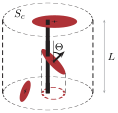
and \(s\leq S<s+\ud s\)
intersecting a well segment of length \(L\) is:
\[ \wideeq{\ud N_L=P_{30}\,L\,s\,\cos{\theta}\, \pprob{S}{s}\ud s\,\pprob{\Theta}{\theta}\ud\theta} \tag{3}\]
where \(\pprobu{S}\) (resp. \(\pprobu{\Theta}\)) is the \(3D\) p.d.f. (probability density function) of the variable \(S\) (resp. \(\Theta\)). Consequently, the p.d.f. of the couple \(\dep{S,\Theta}\) defined on fractures intersecting the well path and denoted by \(\pprobuL{S,\Theta}\) is then related to its \(3D\) counterpart by:
\[ \wideeq{\pprobL{S,\Theta}{s,\theta}= \frac{s\,\cos\theta}{\Esp{S\,\cos\Theta}}\, \pprob{S,\Theta}{s,\theta} = \frac{s}{\Esp{S}}\,\pprob{S}{s} \,\frac{\cos\theta}{\Esp{\cos\Theta}}\,\pprob{\Theta}{\theta}} \tag{4}\]
The second equality of (4) takes advantage of the independence of \(\Theta\) and \(S\) \(3D\) distributions. Moreover, (4) proves that \(\Theta\) and \(S\), as variables concerning only intersecting fractures, are also independent:
\[ \wideeq{\pprobL{S,\Theta}{s,\theta}=\pprobL{S}{s}\,\pprobL{\Theta}{\theta} \;\textrm{with}\; \pprobL{S}{s}=\frac{s}{\Esp{S}}\,\pprob{S}{s} \;\textrm{and}\; \pprobL{\Theta}{\theta}=\frac{\cos\theta}{\Esp{\cos\Theta}}\,\pprob{\Theta}{\theta}} \tag{5}\]
2.2 Density analysis: \(P_{32}\) from \(P_{10}\)
2.2.1 Poisson process on a well path
The aim of this section is to prove that the fracture traces along the well path obey to a Poisson process if the \(3D\) spatial distribution is also of Poisson type i.e. satisfies (1). For this purpose, we build a cylindrical volume around the well path as in [53] (see ?@fig-contvol). The surface of the cylinder section is denoted by \(S_c\) and the height by \(L\).
Assuming that \(S_c\) is very large compared to the order of magnitude of the fracture surface, the probability for any fracture to cut the well path is:
\[ \wideeq{q=\frac{\Esp{S\,\cos{\Theta}}}{S_c}= \frac{\Esp{S}}{S_c}\,\kappa_o \quad\textrm{with}\quad \kappa_o=\Esp{\cos{\Theta}}} \tag{6}\]
Let \(N_L'\) be the number of fractures cutting the well path among those for which the centers belong to the cylindrical volume. It is worth observing that the probability for a fracture to have its center inside the cylindrical volume while cutting the well path is equal to the probability to have its center outside while cutting the well segment contained inside the cylinder. Hence, the probability law of the random number \(N_L\) of fractures cutting this segment of length \(L\) is the same as that of \(N_L'\). Considering the definition of \(N_L'\), we deduce that its conditional probability given the number \(N_V\) of centers inside the cylinder follows a binomial distribution:
\[ \wideeq{\PProb{N_L'|N_V}{n_L|n_V}= \left\{ \begin{array}{ll} 0&\textrm{if }{n_L}>{n_V}\\ {\mathcal{B}}_{{q,n_V}}\dep{n_L}= C_{n_V}^{n_L}\,q^{n_L}\,\dep{1-q}^{{n_V}-{n_L}}&\textrm{if }{n_L}\leq {n_V} \end{array} \right.} \tag{7}\]
where \(C_{n_V}^{n_L}=n_V!/(n_L!(n_V-n_L)!)\) is the binomial coefficient and \(q\) defined in (6). It is now possible to derive \(\PProbu{N_L}\) by introducing (7) and (1) in the marginal law formula [54]
\[ \wideeq{\PProb{N_L}{n_L}=\PProb{N_L'}{n_L}= \sum_{n_V=0}^{+\infty} \PProb{N_L'|N_V}{n_L|n_V}\,\PProb{N_V}{n_V} = \sum_{n_V=n_L}^{+\infty} {\mathcal{B}}_{{q,n_V}}\dep{n_L}\, {\mathcal{P}}_{P_{30}V}\dep{n_V}} \tag{8}\]
Exploiting (2), (6), \(V=S_cL\) and the identity \(\sum_{n=0}^{+\infty}x^n/n!=e^{x}\), (8) becomes:
\[ \wideeq{\PProb{N_L}{n_L}= e^{-P_{32}\,\kappa_o\,L/q}\, \frac{\dep{P_{32}\,\kappa_o\,L}^{n_L}}{{n_L}!}\; \sum_{{n}=0}^{+\infty} \frac{\Big( P_{32}\,\kappa_o\,L\,\dep{1-q}/{q}\Big)^{n}}{{n}!} = e^{-P_{32}\,\kappa_o\,L}\, \frac{\dep{P_{32}\,\kappa_o\,L}^{n_L}}{{n_L}!} ={\mathcal{P}}_{P_{32}\kappa_oL}\dep{n_L}} \tag{9}\]
The probability law (9) proves that the property of cutting the well path is a Poisson process. It follows that the mean number of traces per well unit length is consistent with the integration of (3) and highlights the correction factor between \(P_{10}\) and \(P_{32}\) already put in evidence in numerous works after [36] ([38], [39], [41], [21], [40]):
\[ \wideeq{P_{10}= \frac{\Esp{N_L}}{L}=P_{32}\,\kappa_o} \tag{10}\]
Similarly to \(P_{32}\), \(P_{10}\) plays the role of a parameter in the Poisson process characterizing the number of fracture traces on the well interval. Moreover the spacing \(\Delta\) between two consecutive traces obeys to an exponential law ([37]):
\[ \wideeq{\pprob{\Delta}{\delta}= P_{10}\,e^{-P_{10}\,\delta} \quad(\forall \delta\geq 0)} \tag{11}\]
As aforementioned, some field studies have put in evidence fracture spacings obeying to (11) ([51], [52], [21]), which allows to define an observable criterion of the spatial distribution. Indeed, it is recalled in [55] that if the latter if of Poisson type, the ratio between the standard deviation and the mean of the spacing distribution is \(1\), whereas the ratio is smaller than \(1\) if the traces are more regularly spaced, and greater than \(1\) if the traces are clustered.
2.2.2 Probability law of \(P_{32}\)
The expression (9) has been obtained under the hypothesis that \(P_{32}\) was a known parameter. Assuming now that \(P_{32}\) is a random variable, (9) writes:
\[ \wideeq{\PProb{N_L|P_{32}}{n_L|p}= e^{-p\,\kappa_o\,L}\, \frac{\dep{p\,\kappa_o\,L}^{n_L}}{{n_L}!}} \tag{12}\]
Invoking Bayes’ theorem [54] by taking (12) as the conditional probability and considering the prior \(\pprobu{P_{32}}\) and the marginal \(\PProbu{N_L}\) probabilities as normalizing constants, the p.d.f. of \(P_{32}\) given the number \(N_L\) is obtained as the posterior probability:
\[ \wideeq{\pprob{P_{32}|N_L}{p|n_L}= e^{-p\,\kappa_o\,L}\, \frac{p^{n_L}\,\dep{\kappa_o\,L}^{n_L+1}}{n_L!} =\Gamma_{{n_L+1,\kappa_oL}}\dep{p}} \tag{13}\]
where \(\Gamma_{{n_L+1,\kappa_o L}}\) denotes the p.d.f. of the gamma type [54] depending on the parameters \(n_L+1\) and \(\kappa_o L\). In particular, the conditional expectation, mode
and standard deviation can be deduced as:
\[ \wideeq{\Esp{P_{32}|N_L=n_L}=\frac{n_L+1}{\kappa_o\,L} \;;\quad \Mode{P_{32}|N_L=n_L}=\frac{n_L}{\kappa_o\,L} \;;\quad \sqrt{\Var{P_{32}|N_L=n_L}}=\frac{\sqrt{n_L+1}}{\kappa_o\,L}} \tag{14}\]
It must be emphasized that the expectation and the mode (14) of \(P_{32}\) given \(N_L\) are not identical and, in particular, \(\Esp{P_{32}|N_L=0}\neq 0\). The conditional p.d.f. (13) is represented on ?@fig-pdfP32 for different values of \(L\) or \(N_L\) for a given expectation (14) \(\Esp{P_{32}|N_L=n_L}=1/m\). It quantitatively shows the influence of the length over which data are gathered and the number of data on the width of the p.d.f.. In particular, the ratio between the standard deviation and the expectation (14) decreases with respect to \(n_L\) as \(1/\sqrt{n_L+1}\).
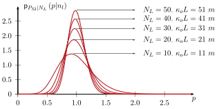
The cumulative distribution function is:
\[ \wideeq{\cdf{P_{32}|N_L}{p|n_L}=\ProbN{P_{32}\leq p|N_L=n_L}= \frac{1}{n_L!}\, \int_{t=0}^{p\,\kappa_o\,L} e^{-t}\,t^{n_L}\ud t =\frac{1}{n_L!}\,\gamma\dep{n_L+1,p\,\kappa_o\,L}} \tag{15}\]
where \(\gamma\) is the so-called incomplete gamma function:
\[ \wideeq{\gamma(a,x)=\int_{t=0}^{x} e^{-t}\,t^{a-1}\ud t} \tag{16}\]
Let us recall that the quantiles \(q_\alpha\) of the law of \(P_{32}\) given \(N_L\) are defined by:
\[ \wideeq{\cdf{P_{32}|N_L}{q_\alpha|n_L}=\ProbN{P_{32}\leq q_\alpha|N_L=n_L}=\alpha} \tag{17}\]
and can be obtained with respect to the integer \(n_L\) by the resolution of:
\[ \wideeq{q_\alpha=\frac{\tilde{q}_\alpha}{\kappa_o\,L} \quad\textrm{with}\quad \frac{1}{n_L!}\,\gamma\dep{n_L+1,\tilde{q}_\alpha}=\alpha} \tag{18}\]
2.2.3 Validation by Monte Carlo simulations
The validity of the \(P_{32}\) p.d.f. found in the previous paragraph is now checked by means of Monte Carlo simulations. Discrete fracture networks are randomly drawn for several values of \(P_{32}\). The number of fractures \(N_L\) intersecting a well segment, which length \(L\) is set to \(20\) in the following simulations, is calculated for each network.
The cloud of points \((N_L/L,P_{32})\) can then be compared on Fig. 1 to the expectation of the law (13) as well as to the first and ninth deciles \(q_{10}\) and \(q_{90}\) respectively. For sake of simplicity, fractures are sometimes modeled as disks or more generally as ellipses characterized by two radii which follow scalar distributions such as power law, lognormal or exponential laws [47]. In the simulations of Fig. 1, the fractures are ellipses of aspect ratio \(1/2\) which largest radius follows a lognormal distribution of mean \(1~m\) and standard deviation \(0.3~m\). As regards the orientation, a bivariate normal distribution [49] is adopted. It is recalled that such a distribution is characterized by an orthonormal frame \((\uv{r},\uv{t}_1,\uv{t}_2)\) (where \(\uv{r}\) is the mean pole and \((\uv{t}_1,\uv{t}_2)\) is a basis of the plane tangent to the unit sphere at point \(\uv{r}\)) or equivalently by three Euler angles (see ?@fig-coorsph) as well as by two standard deviation parameters \(s_1\) and \(s_2\) such that the orientation p.d.f. writes with respect to the unit sphere random vector \(\n\):
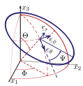
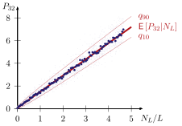
\[ \wideeq{\ProbN{ c_i\leq\n\prodc\uv{t}_i\leq c_i+\ud c_i;\, i=1,2}= \frac{1}{2\,\pi\,s_1\,s_2\,{\mathcal{I}}\dep{s_1,s_2}}\, e^{-\frac{1}{2}\,\dep{\dep{\frac{c_1}{s_1}}^2+\dep{\frac{c_2}{s_2}}^2}}\, \ud c_1\,\ud c_2} \tag{19}\]
where \({\mathcal{I}}\dep{s_1,s_2}\) is a normalization constant such that the integral of (19) over the unit disk \(\depa{c_1^2+c_2^2\leq 1}\) is \(1\). For the simulations of Fig. 1, a mean pole inclined by \(\theta=45�\) with respect to the well direction \(\uv{e}_3\) has been chosen and \(s_1=s_2=0.1\). Moreover, the angle \(\Psi\) defining the direction of the major axis of a fracture in its plane (see ?@fig-coorsph) is taken constant and equal to \(\pi/2\), i.e. the major axis belongs to the horizontal plane.
As shown on Fig. 1, the law (13) is consistent with the Monte Carlo simulations; in particular, the proportion of points lying between the two decile curves among the \(2000\) drawn fracture networks is \(79.16\%\).
3 Cylindrical data
3.1 Orientation and size distributions on a cylindrical well
In this paragraph, the well is considered as a circular cylinder of radius \(R_c\) and the vector \(\ve{3}\) gives the direction of the axis. Because of the complexity of the intersection between a cylinder and any bounded surface representing a fracture, we limit ourselves to elliptic fractures of random major radius \(A\) and small radius \(B\). As discussed in [48], the elliptical shape, albeit simple, is of great interest because of its ability to account for anisotropy in the fracture plane unlike the classically assumed circular shape
To achieve the determination of such a fracture in the \(3D\) space, we also have to know the center coordinates \((x_1^o,x_2^o,x_3^o)\) and the angles \((\Theta,\Phi,\Psi)\) defining the local frame of the ellipse: \(\Theta\) still denotes the angle between the normal vector and the well direction, \(\Phi\) is the angle between the projection of the normal vector onto the plane perpendicular to the well and the \(x_1\) axis (directly related to the dip-azimuth if the well path is vertical) and \(\Psi\) allows to determine the rotation of the fracture in its own plane (see ?@fig-coorsph).
The projection of such an ellipse onto the plane orthogonal to the well direction is an ellipse defined thanks to the quadratic form:
\[ \wideeq{\left( \begin{array}{c} x_1-x_1^o\\ x_2-x_2^o \end{array} \right) \cdot \uu{R} \cdot \uu{H}^{-1} \cdot \uu{R}^{-1} \cdot \left( \begin{array}{c} x_1-x_1^o\\ x_2-x_2^o \end{array} \right) \leq 1} \tag{20}\]
with
\[ \wideeq{\uu{R}= \left( \begin{array}{cc} \cos\Phi &-\sin\Phi \\ \sin\Phi &\cos\Phi \end{array} \right) \;\textrm{ and}\; \uu{H}= \left( \begin{array}{cc} \cos^2\Theta\,\dep{A^2\,\cos^2\Psi+B^2\,\sin^2\Psi} &\dep{A^2-B^2}\,\cos\Theta\cos\Psi\sin\Psi \\ \dep{A^2-B^2}\,\cos\Theta\cos\Psi\sin\Psi &A^2\,\sin^2\Psi+B^2\,\cos^2\Psi \end{array} \right)} \tag{21}\]
The radii of the ellipse \(\hat{A}\) and \(\hat{B}\leq \hat{A}\) in the \(\dep{x_1,x_2}\) plane are the square roots of the eigenvalues of \(\uu{H}\) (21) and thus do not depend on \(\Phi\):
\[ \wideeq{\hat{A}\dep{A,B,\Theta,\Psi} =\sqrt{\frac{\tr{\uu{H}}+\sqrt{\dep{\tr{\uu{H}}}^2-4\det{\uu{H}}}}{2}} \quad;\quad \hat{B}\dep{A,B,\Theta,\Psi} =\sqrt{\frac{\tr{\uu{H}}-\sqrt{\dep{\tr{\uu{H}}}^2-4\det{\uu{H}}}}{2}}} \tag{22}\]
The product of the two radii, which could also have been calculated from the projection of the surface, is:
\[ \wideeq{\hat{A}\,\hat{B}=A\,B\,\cos\Theta} \tag{23}\]
In the case of an initial circular fracture namely \(A=B\), the simple expressions of \(\hat{A}\) and \(\hat{B}\) are obviously found:
\[ \wideeq{\hat{A}=A \quad;\quad \hat{B}=A\,\cos\Theta} \tag{24}\]
As shown by (20), the orientation of the ellipse is given by a rotation of angle \(\Phi\) of the eigenvectors of \(\uu{H}\). The general expressions (22) and the determination of the axis of the projected ellipse show that the shape and the orientation of the latter are not independent whereas it is the case for the ellipse in the \(3D\) space.
3.1.1 Statistics on fractures cutting the well
In the sequel, we follow the reasoning presented in [41] to calculate the surface of the domain to which the projection of the fracture center must belong so that the fracture cuts the cylinder, given the radii \(\dep{A,B}\) and the angles \(\dep{\Theta,\Psi}\). As for the \(1D\) case, this surface, denoted hereafter by \(\sigma\), will be very useful to define the p.d.f. of any variable over fractures intersecting at least partially the cylinder surface. The mean number of fractures such that
\(\theta\leq\Theta<\theta+\ud\theta\),
\(\psi\leq\Psi<\psi+\ud\psi\),
\(a\leq A<a+\ud a\), and
\(b\leq B<b+\ud b\), intersecting a part of the well cylinder of length \(L\) is then:
\[ \wideeq{\ud N_L=P_{30}\,L\,\sigma(a,b,\theta,\psi)\, \pprob{A,B}{a,b}\,\ud a\, \ud b \,\pprob{\Theta,\Psi}{\theta,\psi}\,\ud\theta\,\ud\psi} \tag{25}\]
From the same reasoning as that leading to (4) in \(1D\), we write the p.d.f. of \(\dep{A,B,\Theta,\Psi}\) defined on fractures intersecting the well cylinder denoted by \(\pprobuC{A,B,\Theta,\Psi}\) from the \(3D\) p.d.f. \(\pprobu{A,B}\) and \(\pprobu{\Theta,\Psi}\):
\[ \wideeq{\pprobC{A,B,\Theta,\Psi}{a,b,\theta,\psi}= \frac{\sigma} {\Esp{\sigma}}\, \,\pprob{A,B}{a,b}\,\pprob{\Theta,\Psi}{\theta,\psi}} \tag{26}\]
where
\[ \wideeq{\Esp{\sigma}= \int_{a,b,\theta,\psi} \sigma(a,b,\theta,\psi) \,\pprob{A,B}{a,b}\,\pprob{\Theta,\Psi}{\theta,\psi} \ud\theta\ud\psi\ud a\ud b} \tag{27}\]
The expression of \(\sigma\) is now presented from results in [41] and [47]. Actually \(\sigma\) depends on \((A,B,\Theta,\Psi)\) through \((\hat{A},\hat{B})\) given by (22). Let us introduce the angle \(\Lambda\)
such that
\[ \wideeq{\hat{B}=\hat{A}\,\cos\Lambda \quad(0\leq\Lambda\leq\pi/2)} \tag{28}\]
It is worth noting that if \(A=B\) then \(\Lambda=\Theta\) because of (24). The expression of \(\sigma\) derived in [41] and recalled in [47] can be simplified using classical elliptic integrals (details can be found in appendix 5):
\[ \sigma= \left\{ \begin{array}{ll} \pi\,(\cos\Lambda\,\hat{A}^2+R_c^2)+4\,{\mathcal{E}}\dep{\sin\Lambda}\,\hat{A}\,R_c &\textrm{if }\hat{A}\geq R_c\\ 8\,{\mathcal{E}}\dep{\sin\Lambda}\,\hat{A}\,R_c &\textrm{if }\hat{A}\leq R_c\,\cos\Lambda\\ 8\,{\mathcal{E}}\dep{\sin\Lambda}\,\hat{A}\,R_c+{\mathcal{J}}^{-}\dep{\eta} &\textrm{if }R_c\,\cos\Lambda<\hat{A}<R_c \end{array} \right. \tag{29}\]
where \({\mathcal{E}}(k)\) is the complete elliptic integral of the second kind recalled in (64) (it can be estimated by \({\mathcal{E}}\dep{\sin\Lambda}\approx \pi/2\sqrt{(1+\cos^2\Lambda)/2}\) [56] if \(\Lambda\) is not in the neighborhood of \(\pi/2\)), \({\mathcal{J}}^{-}\) is defined in (63) and \(\eta\) in (66). The exact expressions (29) require to resort to tabulated values of elliptic integrals allowing then to perform any numerical integration scheme involving \(\sigma\) such as the trapeze method, gaussian quadrature etc., to compute for example (27). Nevertheless, some authors ([25], [47]) propose simpler approximate expressions valid only for \(\Lambda\) far enough from \(\pi/2\) and which can be useful in some particular cases of exact integration:
\[ \sigma\approx \sigma_a= \left\{ \begin{array}{ll} \pi\,(\hat{A}+R_c)\,(\hat{B}+R_c) &\textrm{if }\hat{A}>R_c\\ 2\,\pi\,(\hat{A}+\hat{B})\,R_c &\textrm{if }\hat{A}\leq R_c \end{array} \right. \tag{30}\]
Unlike the \(1D\) case, it must be emphasized here that the variables of shape and orientation concerning fractures intersecting the well surface are not in general independent. Indeed, the p.d.f. (26) is not necessarily the product of each marginal p.d.f. since \(\sigma\), depending on \((A,B,\Theta,\Psi)\) through \((\hat{A},\hat{B})\), is not the product of a function of \((A,B)\) on the one hand and a function of \((\Theta,\Psi)\) on the other hand in (29) or (30). Nevertheless, let us cite two cases for which the couples \((A,B)\) and \((\Theta,\Psi)\) remain independent. First, if \(A\geq B\gg R_c\) and \(\Theta\) is far enough from \(\pi/2\) then, using (23) and (28), (29) implies
\[ \wideeq{\sigma\approx\pi\,\hat{A}\,\hat{B} =S\,\cos\Theta} \tag{31}\]
This means that the p.d.f. (26) is the same as that found in the \(1D\) case (4), which can be explained by the fact that the well radius is so small compared to the fracture length that the well can be considered as a line [47]. The second case is obtained when \(A<R_c\,\cos\Theta\) and the fractures are circular (i.e. \(\hat{A}=A=B\) and \(\Lambda=\Theta\)). Under these assumptions, the surface \(\sigma\) given by (29) proves then that \(A\) and \(\Theta\) are independent:
\[ \wideeq{\sigma=8\,A\,R_c\,{\mathcal{E}}\dep{\sin\Theta}} \tag{32}\]
3.1.2 Fractures with full intersections
Instead of considering the population of fractures partially intersecting the cylinder, it could be interesting to focus on those characterized by a full intersection (this set is not empty if the condition \(R_c<\hat{B}\) is fulfilled), inducing then the definition of a new domain of surface \(\sigma^f\) to which must belong the projection of the fracture center. The expression of \(\sigma^f\) presented in [47] does not seem to be right. Indeed, from calculations detailed in appendix 5, it comes that:
\[ \sigma^f= \left\{ \begin{array}{ll} 0&\textrm{if }\hat{A}\,\cos\Lambda\leq R_c\\ \textrm{else}&\\ {\mathcal{J}}^{-}\dep{\pi/2}= \pi\,(\cos\Lambda\,\hat{A}^2+R_c^2)-4\,{\mathcal{E}}\dep{\sin\Lambda}\,\hat{A}\,R_c &\textrm{if }\hat{A}\,\cos^2\Lambda\geq R_c\\ {\mathcal{J}}^{-}\dep{\xi} &\textrm{if }\hat{A}\,\cos^2\Lambda<R_c \end{array} \right. \tag{33}\]
where the function \({\mathcal{J}}^{-}\) is defined by (63) and \(\xi\) by (65). From the same reasoning as that leading to (30), when \(\Lambda\) is far from to \(\pi/2\), this surface can also be roughly estimated by ([25], [47]):
\[ \wideeq{\sigma^f\approx \sigma^f_a= \left\{ \begin{array}{ll} \pi\,(\hat{A}-R_c)\,(\hat{B}-R_c)&\textrm{if }R_c<\hat{B}\leq \hat{A}\\ 0&\textrm{if }\hat{B}\leq R_c \end{array} \right.} \tag{34}\]
As mentioned in [47], the probability for a fracture cutting the well to fully cut it, given its orientation and length, is simply the ratio \(\sigma^f/\sigma\). Eventually, given size and orientation distributions, the proportion of fractures fully cutting the cylindrical well among the entire set cutting the well i.e. the probability that any trace be a full trace is then:
\[ \wideeq{\ProbN{\textrm{trace is full}}=\frac{\Esp{\sigma^f}}{\Esp{\sigma}}} \tag{35}\]
This result is of major interest because it can readily be compared to the empirical ratio observed on the borehole image (full trace number over total trace number). Recalling that the orientation distribution can be estimated from well traces in an easier way than the size one, (35) can somehow be used to assess the likelihood of the latter taken as an input of the model. Nevertheless, numerical simulations in [47] showed that, in some cases, two different fracture size distributions could lead to very close trace length distributions. To improve the determination of the fracture size law which is assumed to be known for our density analysis, some specific methods can be found in the literature. For example, considering fractures as disks, an inversion method from the trace histogram on a plane outcrop is provided in [44] and can be used for a cylinder if the fracture radius is much lower than the well radius. Another method, presented in [25], is based on a linear correlation between the fracture size and an observable property (spacing, aperture etc.) fitted by comparison between (35) and its empirical counterpart.
3.1.3 Fractures with single or double traces
A nonempty intersection between a cylinder and an ellipse can be either a single trace (partial or full) or a double trace. The latter case occurs when the boundary of the ellipse or the projection of the ellipse onto the plane perpendicular to the cylinder axis cuts four times the cylinder. The intersections can be practically found, for instance for simulations, by inserting in (20) the following parameterization of the well circle
\[ \wideeq{x_1(t)=R_c\,\frac{1-t^2}{1+t^2} \quad;\quad x_2(t)=R_c\,\frac{2\,t}{1+t^2}} \tag{36}\]
The equation obtained by replacing the inequality (20) by an equality is a fourth-degree polynom in \(t\). The number of real roots determines the number of traces : four reals roots imply two traces, two real roots imply one trace and no real root corresponds either to an empty intersection between the cylinder and the ellipse or to a full intersection depending on the sign of the left hand side of (20) applied on any point of the circle (36). The surface \(\sigma_2\) of the domain to which the center of the projected ellipse must belong in order to show two traces on the well can be calculated by the procedure given in appendix 5 leading to:
\[ \sigma_2= \left\{ \begin{array}{ll} 0&\textrm{if }\hat{A}\,\cos^2\Lambda\geq R_c\textrm{ or }\hat{A}\leq R_c\,\cos\Lambda\\ \textrm{else}&\\ -{\mathcal{J}}^{-}\dep{\pi/2} &\textrm{if }\hat{A}\,\cos\Lambda\leq R_c\leq\hat{A}\\ -{\mathcal{J}}^{-}\dep{\eta} &\textrm{if }\hat{A}<R_c\\ {\mathcal{J}}^{-}\dep{\xi}-{\mathcal{J}}^{-}\dep{\pi/2} &\textrm{if }\hat{A}\,\cos\Lambda>R_c \end{array} \right. \tag{37}\]
where \({\mathcal{J}}^{-}\) is expressed in (63) (\({\mathcal{J}}^{-}\dep{\pi/2}\) in (33)), \(\eta\) in (66) and \(\xi\) in (65). Knowing \(\sigma\) (29) and \(\sigma_2\) (37), it is now straightforward to calculate the surface \(\sigma_1\) of the domain in which the center of the projected ellipse must be located so as to generate a single trace on the well:
\[ \wideeq{\sigma_1=\sigma-\sigma_2} \tag{38}\]
3.2 Density analysis: \(P_{32}\) from \(P_{10}\)
As previously put in evidence, the main difference with the lineic case is that the correction factor involved when sampling on fractures intersecting the cylindrical well depends on the fracture size distribution and not only on the orientation distribution. Whereas the latter can be rather easily estimated by fitting with sinusoids the fracture traces observed on borehole images, this is not the case concerning the size distribution. As previously mentioned, methods for estimating the latter can be found in the literature ([44], [25], [43], [46]).
However this work does not aim at determining the size distribution but at estimating the fracture density probability, in particular the mean value and uncertainties, knowing the orientation and size distribution. The latter should come from hypotheses and from a preliminary work which is the subject of current research.
3.2.1 Poisson process on a cylindrical well
Since a fracture can leave two traces on the well, it is necessary to distinguish the number \(N_L\) of fractures which cut the well (fully or partially with one or two traces) and the number \(N_L^t\) of observed traces. A fracture leaving a double trace on the well contributes only once in \(N_L\) but twice in \(N_L^t\). Thus, denoting the fracture numbers having a single and a double trace respectively by \(N_1\) and \(N_2\), it comes:
\[ \wideeq{N_L=N_1+N_2 \quad;\quad N_L^t=N_1+2\,N_2} \tag{39}\]
As regards the cylindrical data, the notion of trace within a cylinder of given length (studied interval) has to be clarified since some traces can have a part outside the studied interval. We adopt the convention to relate a trace to the studied interval if the latter contains the mid-point of the trace, which is defined as the point of curvilinear abscissa \((s_A+s_B)/2\) where \(s_A\) and \(s_B\) are the curvilinear abscissae of the extremities, possibly outside the studied interval. Obviously this definition requires to know the whole trace. The aim of this paragraph is to find the probability of the observation namely the number of traces \(N_L^t\) with respect to the fracture density \(P_{32}\) considered here as a parameter of the Poisson distribution. In the case of a very small well radius compared to the fracture length, this task, developped in section 2.2, is rather easy because the number of traces is equal to the number of fractures cutting the well and, as the proportion of full intersections asymptotically reaches \(100\%\), the size distribution is not involved in the probability (9). In the present case, the task is made more complex since the relationship between the observation and the fracture density may be biased by the presence of double traces and influenced by the fracture size.
\(\Esp{N_L}\) can be found from the knowledge of the orientation and size distributions by integration of (25) and a similar reasoning leads to \(\Esp{N_i}_{i=1,2}\):
\[ \wideeq{\Esp{N_L}=P_{30}\,L\,\Esp{\sigma} \quad;\quad \Esp{N_i}=P_{30}\,L\,\Esp{\sigma_i}\;(i=1,2)} \tag{40}\]
Eventually, (2) allows to write the expectations (40) with respect to \(P_{32}\):
\[ \wideeq{\frac{\Esp{N_L}}{L} =P_{32}\,\kappa \quad\textrm{with}\quad \kappa=\frac{\Esp{\sigma}}{\Esp{S}} \quad;\quad \frac{\Esp{N_i}}{L} =P_{32}\,\kappa_i\; \quad\textrm{with}\quad \kappa_{i}=\frac{\Esp{\sigma_{i}}}{\Esp{S}}\;(i=1,2)} \tag{41}\]
The ratios \(\kappa\) and \(\kappa_i\) play the same role as \(\kappa_o=\Esp{\cos\Theta}\) in (10). The reasoning of section 2.2.1 leading to the probability law (9) can be adapted to the present case, observing that the number of fractures which centers belong the control cylinder of ?@fig-contvol and cutting the well follows the same probability law as the number of fractures leaving a trace on the studied cylinder part of length \(L\) whatever the position of the center. Following then the reasoning of section 2.2.1, it comes out that the numbers of fractures intersecting the well or having a single trace or a double trace follow Poisson laws:
\[ \wideeq{\PProb{N_L}{n_L} ={\mathcal{P}}_{P_{32}\kappa L}\dep{n_L} =e^{-P_{32}\,\kappa\,L}\, \frac{\dep{P_{32}\,\kappa\,L}^{n_L}}{{n_L}!} \quad\textrm{ and}\quad \PProb{N_i}{n_i} ={\mathcal{P}}_{P_{32}\kappa_i L}\dep{n_i} =e^{-P_{32}\,\kappa_i\,L}\, \frac{\dep{P_{32}\,\kappa_i\,L}^{n_i}}{{n_i}!}} \tag{42}\]
Obviously these results can also be transposed to the number of full intersections using \(\kappa_f=\Esp{\sigma_f}/\Esp{S}\) in the Poisson law. Considering the different combinations of single and double trace intersections, the probability law of the trace number then writes:
\[ \wideeq{\PProb{N_L^t}{n_L^t} =\sum_{n_2=0}^{\lfloor n_L^t/2 \rfloor} \PProb{N_1}{n_L^t-2\,n_2}\,\PProb{N_2}{n_2} =\sum_{n_2=0}^{\lfloor n_L^t/2 \rfloor} {\mathcal{P}}_{P_{32}\kappa_1 L}\dep{n_L^t-2\,n_2}\, {\mathcal{P}}_{P_{32}\kappa_2 L}\dep{n_2}} \tag{43}\]
where \(\lfloor x \rfloor\) denotes the integer part of the positive real \(x\).
It is useful to remark that \(\kappa=\kappa_1+\kappa_2\) thanks to (38) and (41) and to introduce the probabilities to have a double or a single trace for a fracture cutting the well respectively denoted by \(r\) and \(1-r\):
\[ \wideeq{\ProbN{\textrm{2 traces}}=\frac{\Esp{\sigma_2}}{\Esp{\sigma}}=\frac{\kappa_2}{\kappa}=r \quad;\quad \ProbN{\textrm{1 trace}}=\frac{\Esp{\sigma_1}}{\Esp{\sigma}}=\frac{\kappa_1}{\kappa}=1-r} \tag{44}\]
Indeed, after simple algebraic manipulations, (43) can be rewritten
\[ \wideeq{\PProb{N_L^t}{n_L^t} = \sum_{n_2=0}^{\lfloor n_L^t/2 \rfloor} {\mathcal{B}}_{{r,n_L^t-n_2}}\dep{n_2}\, {\mathcal{P}}_{P_{32}\kappa L}\dep{n_L^t-n_2}} \tag{45}\]
where \({\mathcal{B}}_{{r,n_L^t-n_2}}\) denotes the binomial probability of parameters \(r\) and \(n_L^t-n_2\) already introduced in (7).
3.2.2 Probability law of \(P_{32}\)
A first simple approach to analyze \(P_{32}\) is to focus only on full intersections observed on borehole images. In this case, all the reasoning presented in section 2.2.2 is still valid provided that \(\kappa_o\) be replaced by \(\kappa_f\) and that the number of traces be understood as the number of full traces. Nevertheless, considering cases for which the fracture length are of the same order of magnitude as the well radius, full traces may not exist or at least be so few that the \(P_{32}\) estimate would not be reliable. Consequently, it is worth providing a \(P_{32}\) estimate based on partial intersection analysis. The probability law of \(P_{32}\) in the cylindrical case follows from (45) by analogy with the reasoning allowing to deduce (13) from (12) namely as a posterior probability obtained by normalizing (45) thanks to the identity \(\sum_{n_2=0}^{\lfloor n_L^t/2 \rfloor} {\mathcal{B}}_{{r,n_L^t-n_2}}\dep{n_2}=(1-(-r)^{n_L^t+1})/(1+r)\)
\[ \wideeq{\pprob{P_{32}|N_L^t}{p|n_L^t}= \frac{1+r}{1-(-r)^{n_L^t+1}}\, \sum_{n_2=0}^{\lfloor n_L^t/2 \rfloor} {\mathcal{B}}_{{r,n_L^t-n_2}}\dep{n_2}\, \Gamma_{{n_L^t-n_2+1,\kappa L}}\dep{p}} \tag{46}\]
with \(\Gamma_{n,\lambda}(p)=e^{-\lambda p}\lambda^n p^{n-1}/(n-1)!\) already introduced in (13). The expectation and standard deviation are then given by:
\[ \wideeq{\Esp{P_{32}|N_L^t=n_L^t}= \frac{n_L^t+1-f(n_L^t,r)}{\kappa\,L}\, \quad;\quad \sqrt{\Var{P_{32}|N_L^t=n_L^t}}= \frac{\sqrt{n_L^t+1-f(n_L^t,r)}}{\kappa\,L}\,} \tag{47}\]
with
\[ \wideeq{f(n_L^t,r)= \frac{r\,\depc{n_L^t\,\dep{1+r}\,\dep{1+(-r)^{n_L^t}}-\dep{1-r}\,\dep{1-(-r)^{n_L^t}}}} {\dep{1+r}^2\,\dep{1-(-r)^{n_L^t+1}}}} \tag{48}\]
The expressions (1) differ from (14) by the term \(f(n_L^t,r)\) (48) which appears as a correction due to the presence of double traces. Indeed, in the absence of the latters (\(r=0\)) or if they are simply just ignored, meaning that the traces are supposed to come from different fractures, this correction term vanishes. Ignoring double traces when \(r\) is far from \(0\) could lead to an important error in the \(P_{32}\) estimate. Neglecting the terms \(r^{n_L^t}\) for a large number of observations and \(r<1\), (48) and (1) become:
\[ \wideeq{f(n_L^t,r){\underset{n_L^t\to\infty}{\approx}}\; \frac{r}{1+r}\,n_L^t-\frac{r\,\dep{1-r}}{\dep{1+r}^2}} \tag{49}\]
and
\[ \wideeq{\Esp{P_{32}|N_L^t=n_L^t}{\underset{n_L^t\to\infty}{\approx}} \frac{1}{\kappa\,L}\, \dep{\frac{n_L^t}{1+r}+\frac{1+3\,r}{\dep{1+r}^2}} \;;\; \sqrt{\Var{P_{32}|N_L^t=n_L^t}}{\underset{n_L^t\to\infty}{\approx}} \frac{1}{\kappa\,L}\, \sqrt{\frac{n_L^t}{1+r}+\frac{1+3\,r}{\dep{1+r}^2}}} \tag{50}\]
Keeping only the term in \(n_L^t\) for large values, the expressions (50) show that the ratio between the standard deviation and the expectation still varies as \(1/\sqrt{n_L^t}\) and that the expectation and standard deviation could be deduced from (14) by a correction on the trace number of \(1/(1+r)=(\kappa_1+\kappa_2)/(\kappa_1+2\kappa_2)\). This term exactly corresponds to the ratio between the mean fracture number intersecting the well and the mean trace number taking into account the double traces. This asymptotical behavior is obviously not valid for a small number of observed traces along \(L\). The determination of quantiles as defined in (17) requires now to derive the cumulative distribution function associated with (46):
\[ \wideeq{\cdf{P_{32}|N_L^t}{p|n_L^t}= \frac{1+r}{1-(-r)^{n_L^t+1}}\, \sum_{n_2=0}^{\lfloor n_L^t/2 \rfloor} \frac{{\mathcal{B}}_{{r,n_L^t-n_2}}\dep{n_2}}{\dep{n_L^t-n_2}!}\, \gamma\dep{n_L^t-n_2+1,p\,\kappa\,L}} \tag{51}\]
with the incomplete gamma function introduced in (16). Unlike the lineic case, the quantiles can not be simply deduced from tabulations of \(\gamma\). Nevertheless, it is still possible to normalize them
\[ \wideeq{q_\alpha=\frac{\tilde{q}_\alpha}{\kappa\,L} \quad\textrm{with}\quad \frac{1+r}{1-(-r)^{n_L^t+1}}\, \sum_{n_2=0}^{\lfloor n_L^t/2 \rfloor} \frac{{\mathcal{B}}_{{r,n_L^t-n_2}}\dep{n_2}}{\dep{n_L^t-n_2}!}\, \gamma\dep{n_L^t-n_2+1,\tilde{q}_\alpha} =\alpha} \tag{52}\]
so that \(\tilde{q}_\alpha=\tilde{q}_\alpha(r,n_L^t)\) do not depend on \(\kappa\) and \(L\). The normalized quantiles can be searched by means of an iterative method such as a Newton-Raphson scheme:
\[ \wideeq{\tilde{q}_\alpha^{0}=\Esp{P_{32}|N_L^t=n_L^t;\kappa\,L=1} \quad\textrm{and}\quad \tilde{q}_\alpha^{i+1}=\tilde{q}_\alpha^{i} -\frac{\cdf{P_{32}|N_L^t}{\tilde{q}_\alpha^{i}|n_L^t;\kappa\,L=1}-\alpha} {\pprob{P_{32}|N_L^t}{\tilde{q}_\alpha^{i}|n_L^t;\kappa\,L=1}}} \tag{53}\]
Let us now consider a study case in which the well radius is \(R_c=0.1~m\), the analyzed length is \(L=20~m\), and the number of observed traces is \(N_L^t=20\). The major radius \(A\) of the ellipse follows a lognormal distribution of mean \(1~m\) and standard deviation \(0.1~m\) and the aspect ratio is \(0.3\). The distribution of the fracture normal is of bivariate normal type (19) such that the mean pole is inclined by \(\theta=80�\) with respect to the well direction (the fractures are almost parallel to the well axis) and the deviations are \(s_1=s_2=0.1\). The major axis of the ellipse belongs to the plane orthogonal to the well (\(\Psi=\pi/2\) on ?@fig-coorsph). After computations of \(\Esp{\sigma}\) (27) and \(\Esp{\sigma_i}\) performed by means of gaussian quadrature with ten points along each dimension of integration, the previous data lead to a ratio \(r=34.4\%\) and to \(\kappa=0.174\) allowing then to draw the p.d.f. of ?@fig-pdfLinCyl. The discrepancy between the two curves allows to quantify the error made by neglecting the double traces in the reasoning, in other words by considering that the number of traces is equal to the number of fractures intersecting the cylinder. The normalized histogram also presented on ?@fig-pdfLinCyl corresponds to numbers of discrete fracture networks generated in the validation process of section 3.2.3 and satisfying the same number of traces (here \(20\)) for different \(P_{32}\) intervals. This empirical p.d.f. shows a good agreement with the theoretical p.d.f. (46) taking into account the double trace correction.
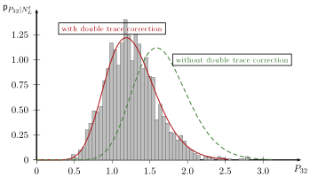
3.2.3 Validation by Monte Carlo simulations
Similarly to the lineic case in section 2.2.3, the conditional p.d.f. of \(P_{32}\) given a trace number on a segment of the cylindrical well is compared to Monte Carlo simulations. In particular, the technique allowing to take into account the effect of double traces on the density has to be confronted with simulations. That is why the size and orientation numerical parameters of the considered fracture set are chosen identical to those used in section 3.2.2 for which the mean proportion of fractures having a double trace is \(34.4\%\). About \(2000\) fracture networks are drawn for different values of \(P_{32}\) such that the maximum number of traces is \(24\) along a segment of length \(L=20\) i.e. \(0\leq N_L^t/L\leq 1.2\). For a given fracture network, the number of (full, partial or double) traces is computed by means of the procedure presented in section 3.1.3. The corresponding couples \((N_L^t/L,P_{32})\) are plotted on ?@fig-quantP32Cyl as well as the expectations and the \(1^{\mathrm{st}}\) and \(9^{\mathrm{th}}\) deciles of \(P_{32}\) given the number of traces per unit length \(N_L^t/L\) according to three models:
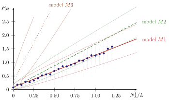
- [(\(M1\))] this model takes into account the effect of double traces, hence the expectation is calculated by (1) and the quantiles by (52),
- [(\(M2\))] this model ignores the possibility of having double traces and thus considers a bijection between the set of traces and the set of intersecting fractures (this amounts to take \(r=0\) in
- and (52)) but still takes into account the effect of the fracture size distribution through the coefficient \(\kappa\),
- [(\(M3\))] this model is based on the lineic results (14) and (18) and differs from \(M2\) by the fact that the correction due to the fracture size is neglected.
The proportion of points lying between the two decile curves of the \(M1\) model is \(80,96\%\) and only \(60\%\) between the curves of \(M2\). Moreover, ?@fig-quantP32Cyl shows again the error made by neglecting the decrease of density estimate due to the presence of double traces. Nevertheless it is worth recalling that, besides the assumption of an elliptic shape of the fractures, \(M1\) and \(M2\) models require the knowledge of the fracture size distribution. Although the issue of relating the trace length distribution to that of the fractures has already been solved in [44] in the case of circular fractures intersecting a plane, it may not be so obvious to transpose this result to a cylindrical well. A numerical treatment of this issue is the subject of a current work. But, without any information about the fracture size, the only available model is \(M3\), which only takes into account the correction due to the observed orientations as if the traces were full, generated by very large fractures. Obviously, the ?@fig-quantP32Cyl shows that this model can not be satisfactory for the fracture set considered here. Indeed, the correction due to the fact that the fractures are almost aligned with the well leads to considerably overestimate the actual \(P_{32}\) density.
4 Application: uncertainty on the fracture number in a D.F.N.
As already stated, the knowledge of the density, among other characteristics of the fracture network, allows to study the percolation and transport properties of fractured rocks either by numerical ([11], [12], [13], [14], [15], [16]) or
theoretical methods ([17], [18], [19], [20], [21], [22]). Thus, the uncertainty on the density should have repercussions on any subsequent calculations depending on this density. To illustrate the consequence of the uncertainty on \(P_{32}\), let us consider the problem of the generation of a D.F.N. consistent with well data and more precisely the number of fractures \(N_V\) in a given volume \(V\). In order to create the D.F.N. corresponding to a given fracture set, it is necessary to give the size and orientation distributions, whatever how they have been calibrated or even postulated. As already recalled, well data can be used to identify the orientation distribution whereas they are often insufficient to calibrate the size and outcrop data may be needed. Provided that these two distributions be known, the \(3D\) density is still needed and it is assumed here that it has to be deduced from a scanline sampling of \(n_L\) traces observed over an interval of length \(L\). As shown in section 2.2.2, \(P_{32}\) is unknown and thus must be considered as a random variable following the law (13) depending on the correction factor \(\kappa_o\) (10) introduced in (6). The probability law of \(N_V\) given \(N_L\) is then obtained by the following marginal law:
\[ \wideeq{\PProb{N_V|N_L}{n_V|n_L}= \int_{p=0}^{+\infty} \PProb{N_V|P_{32}}{n_V|p} \pprob{P_{32}|N_L}{p|n_L} \ud p} \tag{54}\]
It is worth noting that (54) rigorously applies if the observed fractures do not have to be taken into account in the number \(N_V\). Otherwise, \(\PProbu{N_V|P_{32}}\) should be replaced by the probability of \(N_V\) conditioned to \(P_{32}\) as well as \(N_L\). This conditional probability would then differ from the Poisson distribution because \(N_L\) fractures among \(N_V\) are already known [57]. Nevertheless, if the generation volume size is such that \(N_V\) is large enough with respect to \(N_L\), these two laws are only slightly different. Recalling that the probability of \(N_V\) given \(P_{32}\) is of Poisson type (1) where \(P_{30}\) is replaced by (2), the law of \(N_V\) given \(N_L\) writes after calculation:
\[ \wideeq{\PProb{N_V|N_L}{n_V|n_L} =C_{n_V+n_L}^{n_L} \frac{V^{n_V} \,\dep{\kappa_o\,L\,\Esp{S}}^{n_L+1}} {\dep{V+\kappa_o\,L\,\Esp{S}}^{n_V+n_L+1}}} \tag{55}\]
It appears on (55) that the conditional law of \(N_V\) given the trace number on a scanline interval is not of Poisson type. The expectation and standard deviation of such a discrete law are:
\[ \wideeq{\Esp{N_V|N_L=n_L}=\frac{\dep{n_L+1}\,V}{\kappa_o\,L\,\Esp{S}} \;;\quad \sqrt{\Var{N_V|N_L=n_L}}=\frac{\sqrt{\dep{n_L+1}\,V\, \dep{V+\kappa_o\,L\,\Esp{S}}}}{\kappa_o\,L\,\Esp{S}}} \tag{56}\]
By contrast, the point of view consisting in neglecting the random character of \(P_{32}\) and choosing an estimate \(p^{est}\) as if it was deterministic obviously makes \(N_V\) follow the initially assumed Poisson law for which the expectation and standard deviation are given by:
\[ \wideeq{\Esp{N_V|P_{32}=p^{est}}=\frac{p^{est}\,V}{\Esp{S}} \;;\quad \sqrt{\Var{N_V|P_{32}=p^{est}}}=\sqrt{\frac{p^{est}\,V}{\Esp{S}}}} \tag{57}\]
For instance, \(p^{est}\) could be chosen as the empirical mean of \(P_{10}\) corrected by \(\kappa_o\) (10) namely \(p^{est}=n_L/(\kappa_o L)\) or it could also be estimated by the expectation (14) namely \(p^{est}=(n_L+1)/(\kappa_o L)\). The ratio between the standard deviation and the expectation in (57) varies in \(1/\sqrt{V}\), which simply recalls that the uncertainty on \(N_V\) relatively to its mean value decreases when the generation volume grows in a Poisson process considering \(P_{32}\) as a fixed value. Moreover, it is pointed out in [37] that, for large density values, the ratio \(N_V/V\) tends towards a continuous variable following a normal distribution. On the contrary, if the random character of \(P_{32}\) is taken into account according to the fact that the only observation is \(N_L=n_L\), the ratio between the standard deviation and the expectation given by (56) tends towards a finite value \(1/\sqrt{n_L+1}\) when \(V\) tends towards infinity. This means that, for large values of \(V\), an increase of the latter does not significantly reduce the uncertainty on \(N_V\). As expected, the only way to reduce this uncertainty is then to get more observed data. By the way, the number of observed traces which is necessary to reach a given ratio \(\rho\) between the standard deviation and the expectation is:
\[ \wideeq{n_L=\dep{1+\frac{\kappa_o\,L\,\Esp{S}}{V}}\,\rho^{-2}-1} \tag{58}\]
The two laws coming from the two approches to characterize the probability of \(N_V\) are presented on ?@fig-pdfNv with numerical values which are representative of a common case of petroleum reservoir engineering (\(10\) observed traces on \(10~m\), \(\kappa_o=1\), \(\Esp{S}=10~m^2\) and \(V=4000~m^3\)): the first one (solid curve) conditioned to the observation \(N_L\) and following the law (55) and the second one considering the two aforementioned fixed values of \(P_{32}\) (dashed curves) and following a Poisson distribution. This figure clearly highlights the additional uncertainty introduced by the fact that \(P_{32}\) is not precisely calibrated by a small number of traces on a well interval. Indeed, it appears that, to be consistent with the fixed well data, the range of possible values for \(N_V\) is very large (between about \(200\) and \(700\) fractures) and should be taken into account for subsequent calculations as percolation thresholds or effective permeabilities. By contrast, the two other curves show a reduction of the range of possible values of \(N_V\) by considering that \(P_{32}\) is fixed and this relative reduction would even be more obvious for larger values of \(V\). Hence, the model with fixed \(P_{32}\) could prevent the user from retaining values of \(N_V\) which could be consistent with the well data.
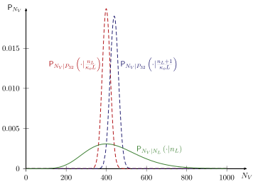
Conclusions and further works
In this paper, the probability law of the \(P_{32}\) density conditioned to the number of traces observed within a well log interval has been derived. The model is based under the following assumptions: fractures are planar, the spatial distribution of their centers is of Poisson type and the orientation and size distributions are independent. Moreover, the studied well interval is assumed to be such that the spatial, size and orientation distributions can be considered as homogeneous. In the case of a lineic model of well, it is shown that the \(P_{32}\) law is of the gamma type. The latter depends only on the number of traces, the length of the analyzed well segment and a correction factor which takes into account the probability law of the inclination of fractures with respect to the well direction. The second model considers the well as a cylinder on which partial fracture traces can be observed and assumes that fractures are elliptical. This model leads to a probability law of the \(P_{32}\) density which writes as a linear combination of gamma probability density functions depending on the number of traces, the length of the analyzed well segment as well as correction factors. These factors depend not only on the fracture orientation but also on the size distribution unlike the lineic case. Indeed, they require the calculation of surfaces of domains to which the projection of a fracture center must belong to intersect the cylinder along one or two traces. Explicit relationships are provided between those surfaces and a priori assumed fracture size. It is believed that the present closed-form results should improve the efficiency of methods estimating the \(3D\) fracture density from well data. In particular, one could readily compute the p.d.f. of the \(P_{32}\) measure of density from a \(P_{10}\) value of a moving window log, without the need to generate discrete fracture networks in Monte Carlo simulations. In complement to the results of many previous works related to this issue ([37], [38], [39], [41], [21], [40], [47]), the present work adds a contribution to the quantification of the estimate uncertainty by providing a probability density function of the \(3D\) Poisson model density parameter given the well observation.
The proposed method requires the preliminary knowledge of the orientation distribution of the fractures which can be identified by various techniques ([50], [49]). More generally, a cluster algorithm should be employed to determine fracture sets within which it is reasonable to assume independency between orientation and size distributions. Note that when the well radius is small compared to the fracture size, the size distribution itself is not needed to apply the lineic model. However, the latter is explicitly needed when the fracture size is of the same order of magnitude as the well radius. Unlike the orientation, the determination of the fracture size distribution remains a very difficult task. Indeed, well data are generally too scarce to infer precise information about the fracture \(3D\) size and the only available methods to relate the latter to the trace distribution concern traces on plane outcrops (e.g. [44], [43], [45] and [46] for circular fractures, [48] for elliptic ones and [58] for a method to estimate the trace distribution itself). Even if these methods can be extended to the case of a cylindrical well surface if the traces are small enough compared to the well radius, they can not be used if this last condition is not satisfied, which is often the case concerning pervasive fractures involved in fluid flows. Another attempt to characterize the \(3D\) size distribution from well data developed in [25] is based on the assumption of a known (e.g. linear) relationship between the size of circular fractures and observable quantities such as the aperture or the spacing. Nevertheless, the issue of finding a robust method providing as precise information as possible about the \(3D\) size distribution from well data without any assumed correlation with other variables may still need to be studied. Finally let us add that, among the basic assumptions allowing to derive the results of this paper, the Poisson spatial distribution of fracture centers deserves to be released. Indeed, although this distribution
has been identified from a large number of field study ([51], [52], [21]), it is suspected to be limited to low density networks [52]. It would thus be very interesting to consider correlations between fracture center positions such as in fractal models [59] or fracture networks such that the spacing on a well path follows other laws than the exponential one (11) characteristic of a Poisson process (e.g. lognormal in [52]).
5 Calculation of surfaces
It is recalled that \(R_c\) denotes the well radius and \(\hat{A}\) and \(\hat{B}=\hat{A}\cos\Lambda\) with \(\Lambda\in[0,\pi/2]\) respectively the major and minor radii of the ellipse obtained by projection of the fracture onto the plane perpendicular to the well direction. The section 3 highlights the correction factors involved when sampling fractures on a cylinder. The determination of the correction factors is based on the calculation of the following surfaces: the surface \(\sigma\) of the domain to which must belong the center of the projected elliptic fracture to cut the well circle (projection of the cylinder boundary) (29), the surface \(\sigma^f\) of the domain to which must belong the center of the projected fracture to contain entirely the well circle (33) and the surface \(\sigma_2\) of the domain to which must belong the center of the projected fracture to leave two traces on the well circle (37). The point of view in these definitions is that of an ellipse moving in the reference frame of the well circle. As suggested in [41], it reveals convenient to adopt the point of view of a circle moving in the reference frame of a motionless ellipse. It follows that, for instance, \(\sigma\) can also be seen as the area of the domain to which the circle center must belong in the reference frame of the elliptic surface so that the latter cuts it. Indeed, the two domains involved in the two definitions of \(\sigma\) are identical but centered respectively on the circle center and the ellipse center. The same reasoning can hold for \(\sigma^f\) and \(\sigma_2\). Eventually, the determination of the boundary of the domains involved here suggests considering extreme cases with the curves described by the center of the circle when the latter is tangent to the ellipse.
5.1 Curves defined by a circle rolling on an ellipse
Two cases can be considered: either the circle “rolls” on the external side of the ellipse boundary or it “rolls” on the internal side of the ellipse boundary. Let us introduce the following parameterization of the ellipse \(M(\alpha)\), its corresponding outward normal vector \(N(\alpha)\) and the curvature radius \(\rho(\alpha)\) with \(\alpha\in[-\pi,\pi]\):
\[ \wideeq{M(\alpha)= \hat{A}\left( \begin{array}{c} \sin{\alpha}\\ \cos\Lambda\cos{\alpha} \end{array} \right) \;\textrm{;}\; N(\alpha)= \left( \begin{array}{c} \frac{\cos\Lambda\sin{\alpha}}{\sqrt{1-\sin^2\Lambda\,\sin^2{\alpha}}}\\ \frac{\cos{\alpha}}{\sqrt{1-\sin^2\Lambda\,\sin^2{\alpha}}} \end{array} \right) \;\textrm{;}\; \rho(\alpha)=\frac{\dep{1-\sin^2\Lambda\,\sin^2{\alpha}}^{3/2}}{\cos\Lambda}\hat{A}} \tag{59}\]
The curvature radius reaches its minimum at \(\rho(\pi/2)=\hat{A}\cos^2\Lambda\) and its maximum at \(\rho(0)=\hat{A}/\cos\Lambda\). The curves described by the center of a circle of radius \(R_c\) rolling outside (\(m^+\)) or inside (\(m^-\)) the ellipse are parameterized by:
\[ \wideeq{m^\epsilon(\alpha)=\left( \begin{array}{c} \dep{\hat{A}+\epsilon\frac{R_c\,\cos\Lambda} {\sqrt{1-\sin^2\Lambda\,\sin^2{\alpha}}}}\,\sin{\alpha}\\ \dep{\hat{A}\,\cos\Lambda+\epsilon\frac{R_c} {\sqrt{1-\sin^2\Lambda\,\sin^2{\alpha}}}}\,\cos{\alpha} \end{array} \right) \quad;\quad \epsilon\equiv +\textrm{ or }-} \tag{60}\]
where \(\epsilon\equiv+\) for the outside curve and \(\epsilon\equiv-\) for the inside one. It is worth remarking that the parametric curves defined by (60) admit the \(x\) and \(y\) axes as symmetry axes, which means that only \(\alpha\in[0,\pi/2]\) should be studied. To calculate surfaces bounded by those curves or parts of them, it will prove useful to introduce
\[ \wideeq{j^\epsilon\dep{\alpha}=4\times \dep{-\frac{1}{2}\,\det\dep{m^\epsilon(\alpha),{m^\epsilon}'(\alpha)}}} \tag{61}\]
which rewrites, using (60)
\[ \wideeq{j^\epsilon\dep{\alpha}= 2\cos\Lambda\,\hat{A}^2+\frac{2\cos\Lambda}{1-\sin^2\Lambda\,\sin^2{\alpha}}\,R_c^2 +\epsilon \dep{4\sqrt{1-\sin^2\Lambda\,\sin^2{\alpha}}- \frac{2\sin^2\Lambda\dep{\cos{2\alpha}+\sin^2\Lambda\,\sin^4{\alpha}}} {\dep{1-\sin^2\Lambda\,\sin^2{\alpha}}^{3/2}}}\hat{A}R_c} \tag{62}\]
Surfaces bounded by the curves (60) will be obtained thanks to the following primitive of (62):
\[ \wideeq{{\mathcal{J}}^\epsilon\dep{\alpha}= 2\alpha\cos\Lambda\,\hat{A}^2+ 2\arctan\dep{\cos\Lambda\tan\alpha}R_c^2 +\epsilon \dep{4{\mathcal{E}}\dep{\alpha,\sin\Lambda} -\frac{\sin^2\Lambda\,\sin{2\alpha}} {\sqrt{1-\sin^2\Lambda\,\sin^2{\alpha}}}}\hat{A}R_c} \tag{63}\]
where
\[ \wideeq{{\mathcal{E}}\dep{\alpha,k}=\int_{0}^{\alpha} \sqrt{1-k^2\,\sin^2\theta}\,\ud\theta \quad\textrm{ and }\quad {\mathcal{E}}\dep{k}={\mathcal{E}}\dep{\pi/2,k}} \tag{64}\]
are respectively the incomplete and complete elliptic integrals of the second kind. The need to take care about the consistency between the sign convention adopted in (61) and the orientation of the domain boundary in surface calculations is worth being highlighted. On the one hand, the curve described by the center of any circle rolling outside the ellipse \(m^+([-\pi,\pi])\) (60) is closed, regular, does not exhibit loops and is oriented in the clockwise direction when \(\alpha\) increases. Therefore, considering the negative sign in the definition (61), the surface of the domain surrounded by this curve is simply provided by \({\mathcal{J}}^+(\pi/2)\) in (63). On the other hand, the trajectory of the center of a circle rolling inside the ellipse may be described by different types of curves depending on the circle radius (see ?@fig-rollcircle).
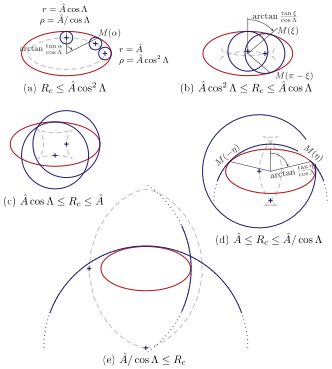
[(a)] If \(R_c\leq\hat{A}\cos^2\Lambda\) (min. curvature radius), the dashed curve of ?@fig-rollcircle(a) described by the center of the circle is closed, regular, does not exhibit loops and is oriented in the clockwise direction. It therefore bounds a domain of area \({\mathcal{J}}^-(\pi/2)\).
[(b)] If \(R_c\geq\hat{A}\cos^2\Lambda\) (min. curvature radius) and \(R_c\leq\hat{A}\cos\Lambda\) (min. radius), the dashed curve of ?@fig-rollcircle(b) shows singular points and loops. Invoking again the symmetries allowing to focus on \(\alpha\in[0,\pi/2]\), it comes out that the point where the curve intersects itself, obtained for \(\alpha=\xi\), belongs to the \(x\) axis or equivalently \(m^-_y(\xi)=0\) in (60). This condition implies:
\[ \wideeq{\xi=\arcsin\frac{\sqrt{\hat{A}^2\,\cos^2\Lambda-R_c^2}} {\hat{A}\,\cos\Lambda\,\sin\Lambda}} \tag{65}\]
At this point \(\alpha=\xi\), the circle is tangent to the ellipse in two symmetrical points with respect to the \(x\) axis \(M(\xi)\) and \(M(\pi-\xi)\).
[(c)] If \(R_c\geq\hat{A}\cos\Lambda\) (min. radius) and \(R_c\leq\hat{A}\) (max. radius), the dashed curve of ?@fig-rollcircle(c) shows singular points but no loops. Furthermore it is oriented in the counter-clockwise direction and thus defines a domain of area \(-{\mathcal{J}}^-(\pi/2)\).
[(d)] If \(R_c\geq\hat{A}\) (max. radius) and \(R_c\leq\hat{A}/\cos\Lambda\) (max. curvature radius), the dashed curve of ?@fig-rollcircle(d) shows singular points and loops. The situation is similar to (b) except that the intersection point belongs to the \(y\) axis. The angle \(\eta\in[0,\pi/2]\) for which this point is reached is then defined by \(m^-_x(\eta)=0\), which implies:
\[ \wideeq{\eta=\arcsin\frac{\sqrt{\hat{A}^2-R_c^2\,\cos^2\Lambda}}{\hat{A}\,\sin\Lambda}} \tag{66}\]
At this point \(\alpha=\eta\), the circle is tangent to the ellipse in two symmetrical points with respect to the \(y\) axis \(M(\eta)\) and \(M(-\eta)\).
[(e)] If \(R_c\geq\hat{A}/\cos\Lambda\) (max. curvature radius), the dashed curve of ?@fig-rollcircle(e) is closed, regular without loops and oriented in the clockwise direction. It therefore defines a domain of area \({\mathcal{J}}^-(\pi/2)\).
5.2 Calculation of \(\sigma\)
From now on, the reference frame is that centered on the circle center. In particular, the curves defined in the last paragraph 5.1 are centered on the circle center and correspond to the motion of the center of the ellipse tangent to the circle. Recalling a result of [41], three cases have to be distinguished to calculate the surface of the domain to which the center of the ellipse must belong to intersect the circle.
- [(a)] If \(\hat{A}\geq R_c\), the ellipse cuts the circle if and only if the ellipse center belongs to the domain bounded by the outside curve \(m^+([-\pi,\pi])\) (60) (see ?@fig-sigma(a)). Consequently, \(\sigma={\mathcal{J}}^+(\pi/2)\).
- [(b)] If \(\hat{A}\leq R_c\cos\Lambda\), the ellipse center must belong to the domain bounded by \(m^+([-\pi,\pi])\) but must be outside the domain bounded by \(m^-([-\pi,\pi])\) (see ?@fig-sigma(b)). Indeed, when the ellipse center belongs to the latter, the ellipse is entirely contained in the circle but does not cut it. The surface is then \(\sigma={\mathcal{J}}^+(\pi/2)-{\mathcal{J}}^-(\pi/2)\).
- [(c)] If \(R_c\cos\Lambda<\hat{A}<R_c\), the maximum curvature radius of the ellipse is greater than the circle radius and the difference with the previous case is that \(m^-([-\pi,\pi])\) presents two intersection points and thus loops bounding three domains: a central and two symmetrical ones (see ?@fig-rollcircle(d)). The domain inside which the ellipse center should be located not to intersect the circle is the central one (see ?@fig-sigma(c)) bounded by \(m^-([\eta-\pi,-\eta]\cup[\eta,\pi-\eta])\) of surface \({\mathcal{J}}^-(\pi/2)-{\mathcal{J}}^-(\eta)\) with \(\eta\) given by (66). Indeed, the two other domains correspond to ellipses which cut the circle along two traces and must be taken into account in \(\sigma\). Hence, the surface is \(\sigma={\mathcal{J}}^+(\pi/2)-{\mathcal{J}}^-(\pi/2)+{\mathcal{J}}^-(\eta)\).
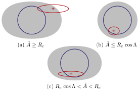
Finally those three results are summarized in (29).
5.3 Calculation of \(\sigma^f\)
A full intersection means that the circle is entirely contained inside the elliptic domain. The first necessary condition is obviously that the minimum radius of the ellipse \(\hat{A}\cos\Lambda\) be greater than \(R_c\) otherwise \(\sigma^f=0\). Considering now \(\hat{A}\cos\Lambda>R_c\), the external boundary of the domain to which the ellipse center must belong is then the curve described by \(m^-(\alpha)\) (60). Indeed, the extreme case is obtained by situations where the circle and the ellipse are tangent but it is also necessary to keep on satisfying the fact that circle should stay inside the ellipse. Two cases can arise:
- [(a)] If \(\hat{A}\cos^2\Lambda\geq R_c\), the minimum curvature radius of the ellipse (and thus the curvature radius at any point) is greater than the circle radius (see ?@fig-sigmaf(a)) which implies that the circle stays inside the ellipse when rolling on its boundary. In other words, \(m^-([-\pi,\pi])\) is actually the boundary of the searched domain and its surface is \(\sigma^f={\mathcal{J}}^-(\pi/2)\).
- [(b)] If \(\hat{A}\cos^2\Lambda<R_c\), the circle rolling inside the ellipse actually stays inside the ellipse only for \(\alpha\in[-\xi,\xi]\) with \(\xi\) defined in (65) and the symmetric curve with respect to the \(x\) axis (see ?@fig-rollcircle(b)). Hence the surface of the crosshatched domain of ?@fig-sigmaf(b) is \(\sigma^f={\mathcal{J}}^-(\xi)\).
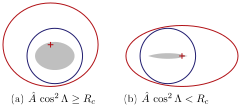
R_c)">
Finally the expressions of \(\sigma^f\) are summarized in (33).
5.4 Calculation of \(\sigma_2\)
If \(R_c\) is greater than the maximum curvature radius \(\hat{A}/\cos\Lambda\) or lower than the minimum one \(\hat{A}\cos^2\Lambda\), the ellipse can not leave two traces (four intersection points) on the circle. If now \(R_c\) lies in the range of variation of the curvature radius (\(R_c\in[\hat{A}\cos^2\Lambda,\hat{A}/\cos\Lambda]\)), the curve \(m^-(\alpha)\) is a candidate to characterize the extreme cases of ellipse centers leading to a double trace as long as the ellipse, tangent to the circle, actually cuts the circle in two other points. Three cases may be encountered:
- [(a)] If \(\hat{A}\cos\Lambda\leq R_c\leq\hat{A}\) i.e. \(R_c\) remains inside the range of variation of the local polar radius of the ellipse, \(m^-([-\pi,\pi])\) is actually the boundary of the searched domain since any ellipse tangent to the circle cuts the latter in two other points (see ?@fig-sigmad(a)). Taking into account that this curve is oriented in the counter-clockwise direction when \(\alpha\) increases (see ?@fig-rollcircle(c)), it follows that \(\sigma_2=-{\mathcal{J}}^-(\pi/2)\).
- [(b)] If \(\hat{A}<R_c\), the ellipse can cut the circle in other points than the point of contact only if \(\alpha\in[-\eta,\eta]\) with \(\eta\) given in (66) and the symmetric points with respect to the \(x\) axis. In other words, the boundary of the searched domain is composed of two parts: one is defined by \(m^-([-\eta,\eta])\) and the other one is obtained by symmetry with respect to the \(x\) axis (see ?@fig-sigmad(b)). An example of extreme case with two points of contact is reached for \(\alpha=\eta\) shown on ?@fig-rollcircle(d). Taking into account the counter-clockwise orientation, the surface of the bounded domain is given by \(\sigma_2=-{\mathcal{J}}^-(\eta)\).
- [(c)] If \(R_c<\hat{A}\cos\Lambda\), the ellipse can cut the circle in other points than the point of contact only if \(\alpha\in[\xi,\pi-\xi]\) with \(\xi\) given in (65) and the symmetric points with respect to the \(y\) axis. The boundary of the searched domain is then composed of two parts: one is defined by \(m^-([\xi,\pi-\xi])\) and the other one is obtained by symmetry with respect to the \(y\) axis (see ?@fig-sigmad(c)). The case \(\alpha=\xi\) corresponds to an extreme case with two points of contact shown on ?@fig-rollcircle(b). Taking into account the counter-clockwise orientation, the surface of the bounded domain is given by \(\sigma_2={\mathcal{J}}^-(\xi)-{\mathcal{J}}^-(\pi/2)\).
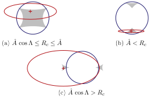
Finally the expressions of \(\sigma_2\) are summarized in (37).